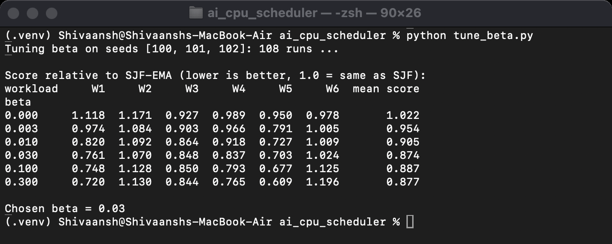
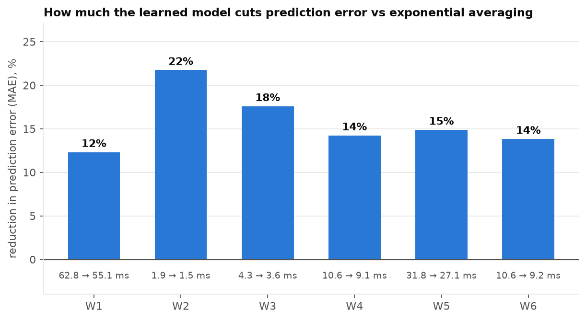
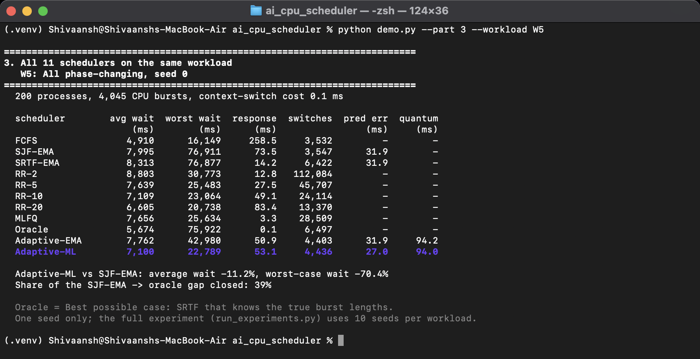

Operating System (BCSE303P)
Course Project – Review 3
L15+L16
Faculty: Dr. Anisha M. Lal
Adaptive CPU Scheduling Using Predicted Burst Lengths
Submitted by
| Shivaansh Aggarwal | 24BCE0883 |
| Devansh Sharma | 24BCE0717 |
| Shivaansh Aggarwal | 24BCE0883 |
| Devansh Sharma | 24BCE0717 |
This document presents the evaluation of the adaptive scheduler described in Review 2, its comparison with existing systems, and the conclusion and future work.
Each of the six workloads (W1 to W6, described in Review 2) was generated with ten different random seeds, giving 60 workload instances of 200 processes each. All eleven schedulers were run on every instance, for a total of 660 runs. Because every scheduler sees exactly the same processes, the results can be compared seed by seed (paired comparison) rather than as independent averages. In addition, 120 runs were used for an ablation study, 130 for parameter sweeps and 150 for testing different context-switch costs.
For a process i with arrival time ai, completion time ci, time of first execution si, total CPU time Bi and total I/O time IOi, the following are measured [1]:
Turnaround Ti = ci − ai Waiting Wi = Ti − Bi − IOi Response Ri = si − ai
Along with the averages, the worst-case and 95th-percentile waiting time, the number of context switches, CPU utilisation, throughput (processes completed per second), Jain's fairness index [2] computed on each process's progress rate (Bi + IOi) / Ti, the number of starved processes (those that waited more than five times the average wait of all schedulers on that workload instance), and the prediction error (MAE and RMSE) and prediction time are recorded. To show how close a scheduler gets to the oracle (SRTF with true burst lengths), the share of the gap to the oracle that it closes is also computed:
Gap closed = (WSJF-EMA − Wproposed) / (WSJF-EMA − Woracle) × 100%
The ageing weight β controls a trade-off: a larger value protects long-waiting processes but pushes the order towards FCFS. Since the plan did not fix a value, it was tuned on three separate seeds (100, 101, 102) that are not part of the 660 evaluation runs, so the results are not tuned to the test data. Each value was scored by its average and worst-case waiting time relative to SJF-EMA, and β = 0.03 gave the best overall score (Fig. 1).

Table 1 gives the average waiting time of every scheduler on every workload, averaged over the ten seeds, and Fig. 2 shows the same results as charts with the spread across seeds.
Table 1. Average waiting time in ms (mean of 10 seeds)
| Scheduler | W1 CPU | W2 I/O | W3 Interactive | W4 Mixed | W5 Phase | W6 Overload |
|---|---|---|---|---|---|---|
| FCFS | 2,356 | 454 | 490 | 4,003 | 4,330 | 38,210 |
| SJF-EMA | 2,778 | 395 | 480 | 2,460 | 6,269 | 17,150 |
| SRTF-EMA | 2,881 | 432 | 489 | 1,729 | 6,830 | 16,490 |
| RR-2 | 3,478 | 556 | 608 | 2,394 | 7,675 | 22,998 |
| RR-5 | 2,931 | 470 | 523 | 2,180 | 6,576 | 23,615 |
| RR-10 | 2,755 | 460 | 498 | 2,276 | 6,127 | 26,088 |
| RR-20 | 2,661 | 454 | 488 | 2,572 | 5,713 | 30,333 |
| MLFQ | 2,814 | 503 | 542 | 1,878 | 6,566 | 22,762 |
| Oracle (true bursts) | 1,697 | 370 | 283 | 1,204 | 4,617 | 12,820 |
| Adaptive-EMA | 2,915 | 423 | 487 | 1,851 | 6,569 | 18,017 |
| Adaptive-ML (proposed) | 2,725 | 450 | 505 | 1,786 | 6,163 | 17,599 |

The clearest result is on the mixed workload W4, which is also the most realistic one. Here the proposed scheduler waits 1,786 ms against 2,460 ms for SJF with exponential averaging, a reduction of 27.4%. It is better on all ten seeds, and the mean paired improvement (674 ms) is far larger than its standard deviation (117 ms). This closes 54% of the gap between SJF-EMA and the oracle. On W1 and W5 the average is within 2% of SJF-EMA. On the uniform short-burst workloads W2 and W3, and on the overloaded W6, it is slightly worse, by 14%, 5% and 3% respectively.
Average waiting time hides processes that wait for a very long time. Thanks to the ageing term, the proposed scheduler lowers the worst case by 56% on W1, 27% on W3, 23% on W4 and 53% on W5, and on five of the six workloads it is better than both SJF-EMA and SRTF-EMA. On W5 the number of starved processes per run drops from 7.7 with SJF-EMA to 0.2.
All figures in this subsection are averages over the ten seeds. Round Robin shows the usual trade-off on W4: a 2 ms quantum gives a fast first response but 34,354 context switches per run, while a 20 ms quantum cuts the switches to 6,542 but raises the average response time to 69 ms. The proposed scheduler needs 5,933 switches, 61% fewer than RR with a 5 ms quantum, and has an average response time of 15 ms, so it does not have to give up responsiveness to save switches. When the cost of a context switch was raised from 0.1 ms to 0.5 ms, its average waiting time on W4 grew by 20%, compared with 53% for MLFQ and 62% for RR with a 5 ms quantum.
The learned model, a gradient boosting regressor [3] built with scikit-learn [4], has a lower prediction error than exponential averaging on all six workloads, with reductions between 12% and 22% (Fig. 3). The improvement is largest on I/O-bound processes, where exponential averaging reacts too much to individual random bursts, while the model learns to predict close to the typical burst length.

To check that the quantum really follows the workload, the scheduler was run on a workload whose mix changes every 30 seconds (Fig. 4). The quantum stays around 6 ms while interactive processes arrive, climbs towards the 100 ms upper limit for CPU-bound processes (peaking at about 97 ms), and drops to about 3.4 ms for I/O-bound processes. This is close to the theoretical 80th percentile of their bursts (3.2 ms). No single fixed quantum suits all three phases.

To see which part of the scheduler is responsible for what, each component was switched off in turn on W4 and W5 (Table 2).
Table 2. Ablation results in ms (mean of 10 seeds)
| Variant | W4 avg wait | W4 worst wait | W5 avg wait | W5 worst wait |
|---|---|---|---|---|
| Full scheduler | 1,786 | 18,388 | 6,163 | 25,831 |
| Without ageing | 1,643 | 23,182 | 6,196 | 53,915 |
| Fixed 10 ms quantum | 1,763 | 20,138 | 6,864 | 39,254 |
| Without class modulation | 1,807 | 18,898 | 6,238 | 27,875 |
| Without online refit | 1,833 | 17,766 | 6,134 | 25,482 |
| Prediction only (ML-predicted SJF) | 2,336 | 22,759 | 6,325 | 53,593 |
| SJF-EMA (reference) | 2,460 | 23,766 | 6,269 | 55,480 |
Removing ageing lowers the average on W4 a little, but the worst case rises by 26% on W4 and doubles on W5, so ageing is what keeps long processes from starving. The adaptive quantum matters most when bursts are long: fixing it at 10 ms on W5 raises the average by 11% and the worst case by 52%. Using the better prediction alone (plain SJF with the learned model) improves on SJF-EMA by only 5% on W4. So most of the gain comes from using the prediction in both places together. Class modulation and online refit change the average by less than 3%; the latter is expected since training and test workloads come from the same generator.
Table 3 gives selected additional metrics for representative schedulers on W4. CPU utilisation and throughput are practically the same for every scheduler, which is expected: the CPU never idles while work is waiting, and every scheduler eventually completes the same 200 processes. The proposed scheduler has a lower 95th-percentile wait and fewer starved processes than SJF-EMA, but Round Robin and MLFQ are lower on both. Its Jain fairness index is slightly lower than SJF-EMA's (0.816 against 0.829), and the same holds on every other workload except W3. So the shorter worst case does not translate into a more even spread of progress across processes.
Table 3. Other metrics on W4 (mean of 10 seeds)
| Scheduler | 95th pct wait (ms) | CPU util. | Throughput (/s) | Jain fairness | Starved / run | MAE (ms) | RMSE (ms) |
|---|---|---|---|---|---|---|---|
| FCFS | 12,895 | 0.809 | 2.17 | 0.732 | 17.7 | – | – |
| SJF-EMA | 10,314 | 0.813 | 2.18 | 0.829 | 9.1 | 10.62 | 29.71 |
| SRTF-EMA | 11,683 | 0.819 | 2.20 | 0.842 | 10.2 | 10.62 | 29.71 |
| RR-5 | 8,361 | 0.817 | 2.19 | 0.782 | 3.4 | – | – |
| MLFQ | 8,565 | 0.818 | 2.20 | 0.796 | 3.9 | – | – |
| Oracle | 7,515 | 0.819 | 2.20 | 0.869 | 5.8 | – | – |
| Adaptive-ML | 9,407 | 0.818 | 2.20 | 0.816 | 6.7 | 9.11 | 26.97 |
One prediction with the learned model took 0.50 ms in the isolated benchmark of the training script. Inside the full experiment, where nine simulations ran in parallel on the same laptop, the measured average was about 1.2 ms per prediction on W4, against about 1 µs for exponential averaging.
The seven hypotheses H1–H7 were stated in Review 1, before any experiment was run. Table 4 lists them with what the experiments showed. By the falsification rule fixed in Review 1 (mean paired improvement over SJF-EMA larger than one standard deviation across the ten seeds), the main hypothesis holds on W4 (674 ms against 117 ms) but not on W5 (106 ms against 615 ms).
Table 4. Hypotheses stated in Review 1, and what was observed
| # | Hypothesis | Observed |
|---|---|---|
| H1 | Lower average wait than SJF-EMA on W4, W5 and W6, largest on W5 | Partly: clearly on W4 (−27%); W5 (−2%) and W6 (+3%) within the noise |
| H2 | Far fewer context switches than small-quantum RR, with response time closer to small-quantum than to large-quantum RR | Supported: on W4, 5,933 switches against 15,328 (RR-5); response 15.4 ms against 11.4 (RR-2) and 69.3 (RR-20) |
| H3 | Lower worst-case wait than SJF and SRTF, because of ageing | Partly: on 5 of 6 workloads (not W2) |
| H4 | About the same as SJF-EMA on the uniform workloads W1 and W2 | Partly: W1 yes (−2%), W2 no (+14%) |
| H5 | Does not beat the oracle on average wait | Supported (0 of 60 instances) |
| H6 | Lower prediction MAE than exponential averaging on W5, roughly comparable on W1 | Supported on W5 (27.1 against 31.8 ms); on W1 the model was 12% better rather than comparable |
| H7 | Removing ageing slightly lowers the average but raises the worst case and starvation | Partly: W4 yes; on W5 the average does not drop, but the worst case doubles and starved processes rise from 0.2 to 8.0 |
Table 5 compares the proposed scheduler with each existing algorithm on the mixed workload W4.
Table 5. Comparison on the mixed workload W4 (mean of 10 seeds)
| Scheduler | Avg wait (ms) | Worst wait (ms) | Response (ms) | Switches | Proposed avg wait vs this |
|---|---|---|---|---|---|
| FCFS | 4,003 | 19,407 | 240 | 3,962 | −55.4% |
| SJF-EMA | 2,460 | 23,766 | 71.3 | 3,977 | −27.4% |
| SRTF-EMA | 1,729 | 24,903 | 7.3 | 6,902 | +3.3% |
| RR-2 | 2,394 | 16,996 | 11.4 | 34,354 | −25.4% |
| RR-5 | 2,180 | 14,887 | 23.3 | 15,328 | −18.1% |
| RR-10 | 2,276 | 14,117 | 40.8 | 9,365 | −21.5% |
| RR-20 | 2,572 | 13,386 | 69.3 | 6,542 | −30.6% |
| MLFQ | 1,878 | 15,016 | 2.8 | 11,888 | −4.9% |
| Adaptive-ML (proposed) | 1,786 | 18,388 | 15.4 | 5,933 | – |
The proposed scheduler has a lower average waiting time than every classical algorithm except SRTF-EMA, which is 3% better on average. SRTF-EMA, however, has a 35% higher worst-case wait and 16% more context switches, because it preempts the running process whenever a newly ready process has a shorter predicted remaining time, and it has no ageing. MLFQ comes close on average waiting time and responds faster, since new processes always start in its top queue, but it needs twice as many context switches. Round Robin with 5 to 20 ms quanta keeps a lower worst case, as expected from its strict rotation, but the proposed scheduler has an 18% to 31% lower average waiting time than these.
The same comparison on the phase-changing workload W5 is shown in Fig. 5 for one seed. Here plain FCFS has the lowest average waiting time of all, even lower than the oracle, and the same is true of the ten-seed averages (4,330 ms against 4,617 ms). With processes that have many bursts, always running the shortest burst first (as SJF, SRTF and the oracle do) repeatedly delays processes in their long phase, and this dominates the average. It also shows that the oracle is a strong reference for burst ordering, but not an absolute lower bound when processes have many bursts.

Table 6 compares the proposed scheduler with the related approaches studied in Review 1.
Table 6. Comparison with related approaches
| Approach | Burst lengths needed in advance | Burst prediction | Time quantum | Main limitation |
|---|---|---|---|---|
| Round Robin [1] | No | None | Fixed | Quantum chosen by hand |
| SJF with exponential averaging [1] | No | Exponential average | None | Lags after phase change; can starve long jobs |
| MLFQ [5], [6] | No | Implicit (demotion) | Fixed per level | Many context switches |
| SARR, median quantum [7] | Yes | None | Median of bursts | Assumes known burst times |
| Mean-average quantum [8] | Yes | None | Mean of bursts | Assumes known burst times |
| PBDRR [9] | Yes | None | Per process | Assumes known burst times |
| ML time slices in Linux [10] | No | C4.5 per known program | Per program | Needs known programs; small gains |
| Fuzzy burst prediction [11] | No | Fuzzy inference | None | Prediction used for ordering only |
| Proposed scheduler | No | Gradient boosting, 12 features | 80th percentile of predictions, adjusted live | Simulation only; slower prediction than a kernel allows |
The main difference from the dynamic Round Robin variants [7]–[9], [12] is that the proposed scheduler never assumes that burst lengths are known; it predicts them from history and corrects the quantum using its own prediction errors. Proportional-share methods such as lottery scheduling [13] aim at fairness rather than waiting time and do not use burst lengths at all. Compared with earlier prediction work [10], [11], the prediction is used both for ordering and for the quantum, and an ageing term protects long processes. Unlike whole-job run-time prediction [14], [15] and heavier learning methods for clusters [16], [17] or for modelling the Linux scheduler [18], the approach here is much lighter and works on individual CPU bursts, which addresses the overhead concern raised in [19], though it is still more costly than the fair-share scheduler in Linux [20].
This project set out to check whether predicting CPU bursts, and using the prediction both to order the ready queue and to size the time quantum, makes a measurable difference compared with the classical algorithms. The answer depends on the workload. On the mixed workload, where short interactive bursts compete with long CPU-bound ones, the proposed scheduler reduced the average waiting time by 27% compared with SJF using exponential averaging. It was better on every seed, closed more than half the gap to the oracle, cut the worst-case wait by 23%, and needed 61% fewer context switches than Round Robin with a 5 ms quantum. The ageing term roughly halved the worst-case waiting time on CPU-bound and phase-changing workloads, and the learned predictor was 12–22% more accurate than exponential averaging everywhere.
It did not help on every workload. When all processes have short random bursts (I/O-bound and interactive workloads), there is nothing to predict beyond the average, and preempting at a small quantum only adds switches, so the scheduler was 5–14% worse than SJF there. Under heavy overload, the ageing term pushes the order towards FCFS. We also found that better prediction accuracy by itself brings only a small gain; most of the benefit comes from how the prediction is used. And although the worst case improved, Jain's fairness index was slightly lower than SJF-EMA's on five of the six workloads. Overall, the results support the main idea of applying the textbook quantum rule automatically from live predictions, while showing where its limits are.
[1] A. Silberschatz, P. B. Galvin, and G. Gagne, Operating System Concepts, 10th ed. Hoboken, NJ, USA: Wiley, 2018, ch. 5.
[2] R. Jain, D. Chiu, and W. Hawe, “A quantitative measure of fairness and discrimination for resource allocation in shared computer systems,” Digital Equipment Corporation, Tech. Rep. DEC-TR-301, 1984.
[3] J. H. Friedman, “Greedy function approximation: A gradient boosting machine,” Annals of Statistics, vol. 29, no. 5, pp. 1189–1232, 2001.
[4] F. Pedregosa et al., “Scikit-learn: Machine learning in Python,” Journal of Machine Learning Research, vol. 12, pp. 2825–2830, 2011.
[5] R. H. Arpaci-Dusseau and A. C. Arpaci-Dusseau, Operating Systems: Three Easy Pieces, v1.00. Arpaci-Dusseau Books, 2018, chs. 7–8.
[6] F. J. Corbató, M. Merwin-Daggett, and R. C. Daley, “An experimental time-sharing system,” in Proc. Spring Joint Computer Conf. (AFIPS), 1962, pp. 335–344.
[7] R. J. Matarneh, “Self-adjustment time quantum in round robin algorithm depending on burst time of the now running processes,” American Journal of Applied Sciences, vol. 6, no. 10, pp. 1831–1837, 2009.
[8] A. Noon, A. Kalakech, and S. Kadry, “A new round robin based scheduling algorithm for operating systems: Dynamic quantum using the mean average,” International Journal of Computer Science Issues, vol. 8, no. 3, pp. 224–229, 2011.
[9] R. Mohanty, H. S. Behera, K. Patwari, M. Dash, and M. L. Prasanna, “Priority based dynamic round robin (PBDRR) algorithm with intelligent time slice for soft real time systems,” International Journal of Advanced Computer Science and Applications, vol. 2, no. 2, pp. 46–50, 2011.
[10] A. Negi and P. K. Kumar, “Applying machine learning techniques to improve Linux process scheduling,” in Proc. IEEE Region 10 Conference (TENCON), 2005, pp. 1–6.
[11] A. Pourali and A. M. Rahmani, “A fuzzy-based scheduling algorithm for prediction of next CPU-burst time to implement shortest process next,” in Proc. IACSIT Spring Conference (IACSIT-SC), 2009, pp. 217–220.
[12] T. Helmy and A. Dekdouk, “Burst round robin as a proportional-share scheduling algorithm,” in Proc. IEEE GCC Conference, 2007.
[13] C. A. Waldspurger and W. E. Weihl, “Lottery scheduling: Flexible proportional-share resource management,” in Proc. 1st USENIX Symp. Operating Systems Design and Implementation (OSDI), 1994, pp. 1–11.
[14] W. Smith, I. Foster, and V. Taylor, “Predicting application run times using historical information,” in Job Scheduling Strategies for Parallel Processing, LNCS vol. 1459. Springer, 1998, pp. 122–142.
[15] D. Tsafrir, Y. Etsion, and D. G. Feitelson, “Backfilling using system-generated predictions rather than user runtime estimates,” IEEE Transactions on Parallel and Distributed Systems, vol. 18, no. 6, pp. 789–803, 2007.
[16] H. Mao, M. Alizadeh, I. Menache, and S. Kandula, “Resource management with deep reinforcement learning,” in Proc. 15th ACM Workshop on Hot Topics in Networks (HotNets), 2016, pp. 50–56.
[17] H. Mao, M. Schwarzkopf, S. B. Venkatakrishnan, Z. Meng, and M. Alizadeh, “Learning scheduling algorithms for data processing clusters,” in Proc. ACM SIGCOMM, 2019, pp. 270–288.
[18] S. Y. Kahu, “KernelOracle: Predicting the Linux scheduler's next move with deep learning,” arXiv:2505.15213, 2025.
[19] Y. Zhang, X. Zhao, Z. Li, G. Cheng, J. Yin, L. Zhang, and Z. Chen, “Integrating artificial intelligence into operating systems: A survey on techniques, applications, and future directions,” arXiv:2407.14567, 2024.
[20] Linux Kernel Documentation, “CFS Scheduler.” [Online]. Available: https://docs.kernel.org/scheduler/sched-design-CFS.html
[21] R. Cox, M. F. Kaashoek, and R. Morris, xv6: A Simple, Unix-like Teaching Operating System. MIT, 2020.